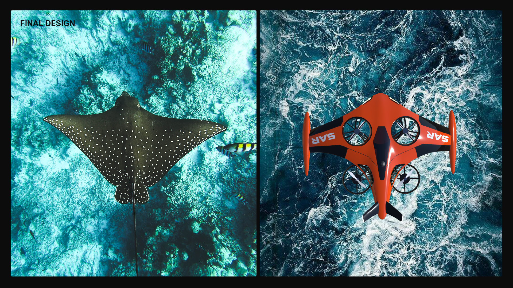
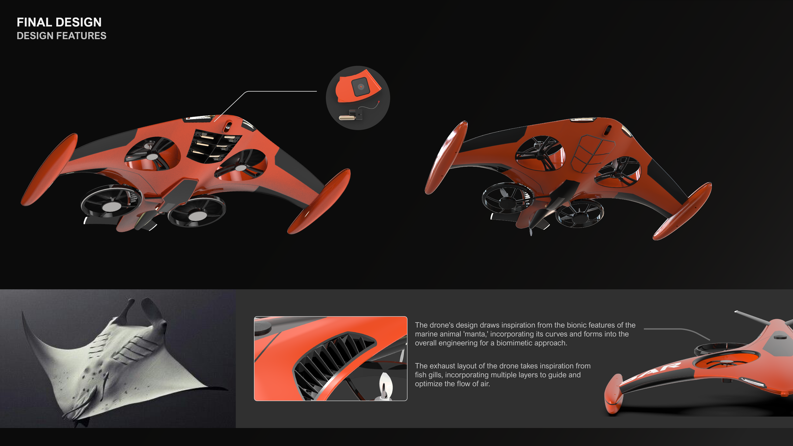

Search from above
Thermal sensing and camera placement establish the vehicle as a rapid first response tool over water.
A search-and-rescue UAV concept informed by thermal detection, ocean conditions and the calm efficiency of a manta ray.

SAR Manta explores an unmanned aerial vehicle for locating people in water. Thermal detection provides the starting point: a human body can be distinguished from the surrounding sea, allowing the vehicle to move directly toward a potential rescue location.
The concept connects that detection task with a vehicle architecture built for stability, recognition and a direct relationship to its environment. Its form is intended to make the mission readable before the product is even in motion.

Biomimetic direction
Thermal sensing and camera placement establish the vehicle as a rapid first response tool over water.
The wide wing profile and controlled proportions make the vehicle recognisable from a distance and less visually aggressive in an emergency context.
Layered exhaust geometry takes inspiration from fish gills, turning a functional air path into part of the aircraft's visual language.

Selected visual / Design featuresAirflow, support wings and propulsion.Current source preview — replace later with flow simulation, hardware test or a clean technical rendering.The final Manta concept uses biomimicry as a functional framework rather than a surface treatment. Its wide body, layered airflow features and mission system work together to express stability, care and decisive action.